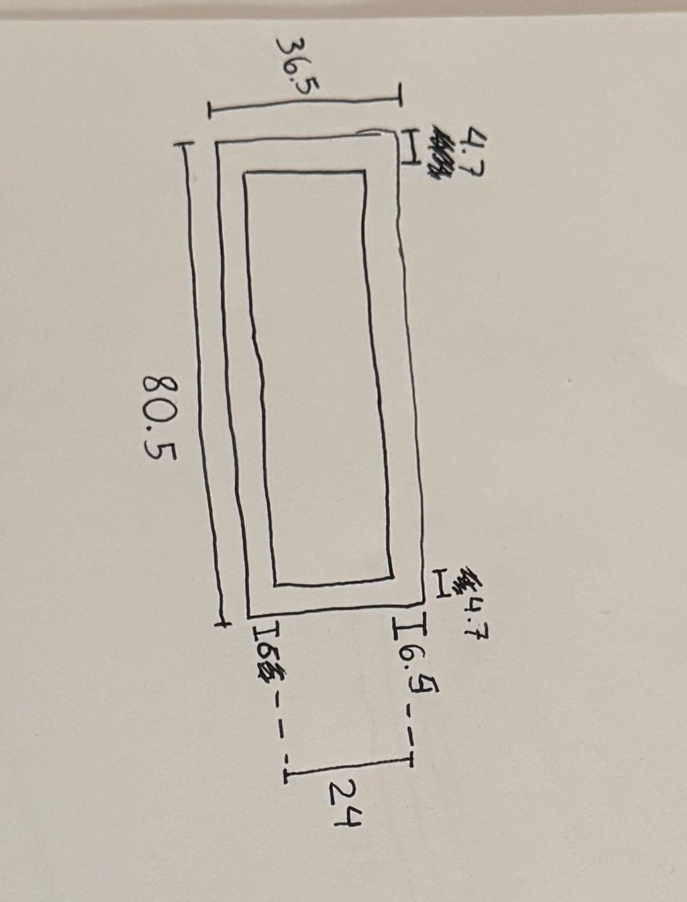
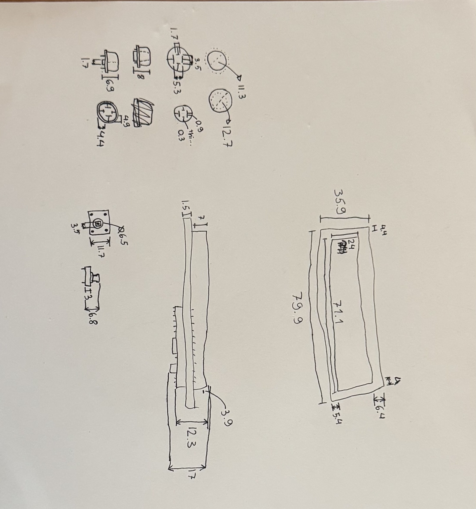
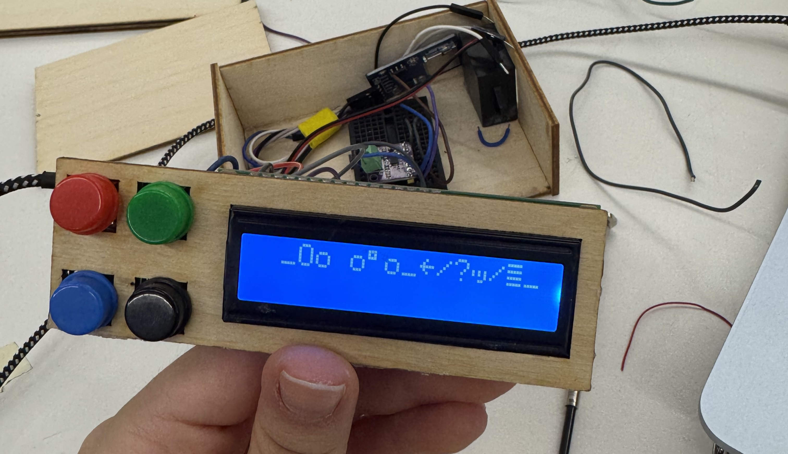
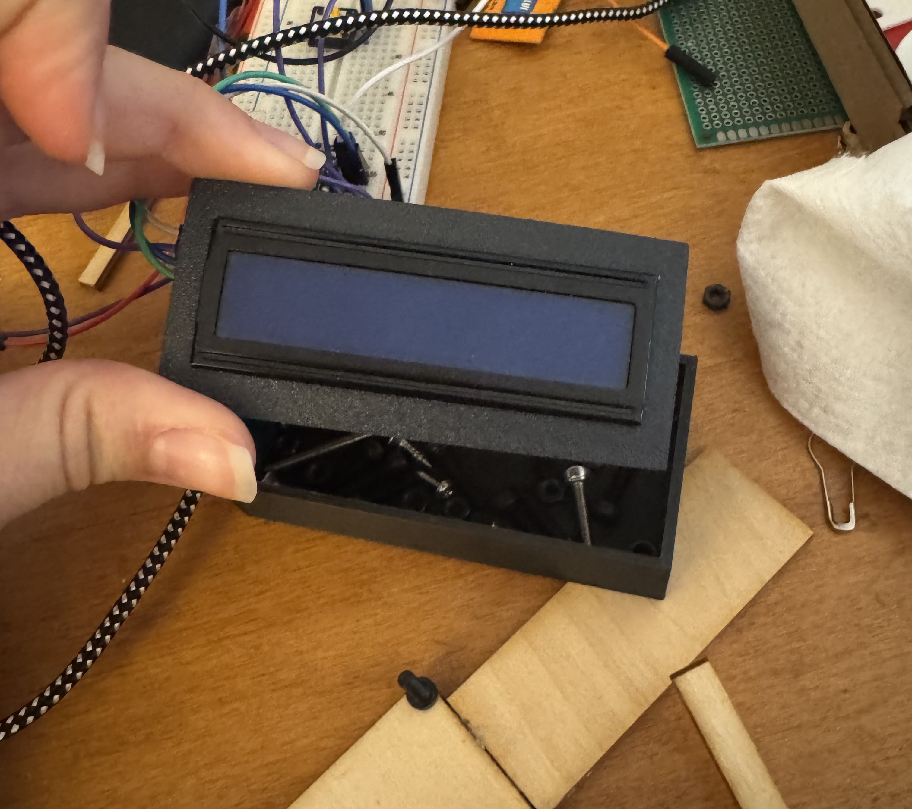

<div class="textcontainer">
<p class="margin"></p>
<h3>Final Project: Duck Timer</h3>
<img src="./video.gif" alt="duck" width="400">
<p class = "margin"></p>
The idea I decided to pursue for the final project was making fun kitchen timer that is enclosed in a 3d printed duck. Its function is to be a helper when cooking/baking so it warns you before your time is done in order to make sure that you check on your progress and making sure nothing burns or overcooks.
The process: I started with what I thought would be the hardest part which was the coding. I used a LCD screen, buttons and a speaker to code a timer. The next step was making the CAD design to package everything in a nice way.
<p class = "margin"></p>
I then started measuring my components in order to better design the overall packaging of my project. I found this to be a lot harder then I expected.
<br>
<p></p>
<p></p>
<p class = "margin"></p>
Then I started thinking of the movements that I wanted the duck to make. With that I started designing the mechanism with gears. All the files are bellow. However I then decided to fucus on the packaging of the screen and all the things with that.
<br>
<img src="./gears v1.jpg" alt="gears" width="400">
<img src="./gears2 v1.jpg" alt="gears2" width="400">
<img src="./lcd-box v1.jpg" alt="lcd-box" width="400">
<img src="./mechanismv1.gif" alt="mechanismv1" width="400">
<p class = "margin"></p>
After polishing the final code (which can be found below) I soldered all the components together, everything continued working so I thought everything was fine. That was until the screen just started freaking out... It took really long before everything was fixed.
<p></p>
<p></p>
<p class = "margin"></p>
In the future I want to modify the code and use different componets (like a bigger screen) to make a better and improved version of this timer.
</div>